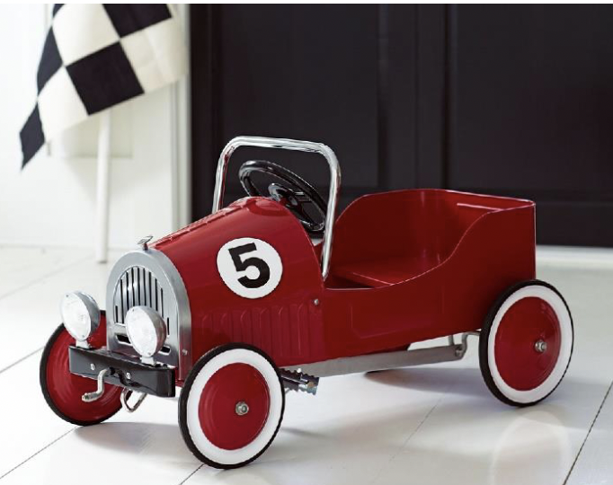
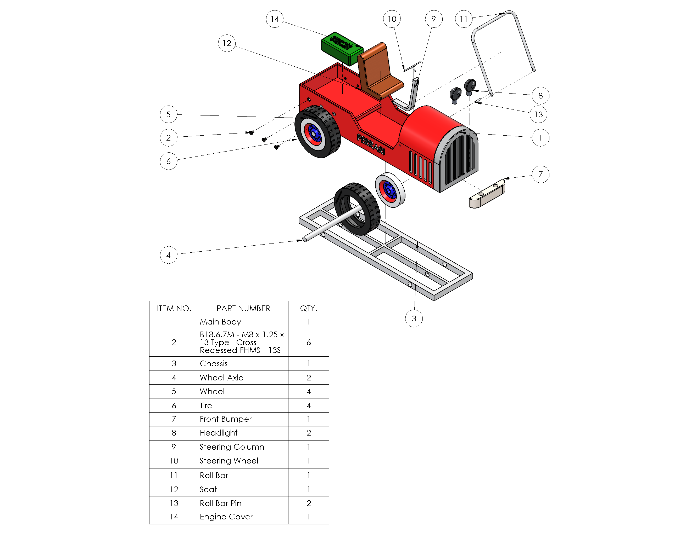

Ultrasonic obstacle detection
A shoe-mounted device scans the path ahead with ultrasonic sensors — an inconspicuous alternative to the white cane.
Mechanical Engineering · Mechatronics
Mechanical engineering student at the University of Washington who designs, builds, and tests mechatronic systems — from CAD and PCB design to machining, prototyping, and validation. Here's a look at what I've made.
I'm a Mechanical Engineering student at the University of Washington (B.S. in Mechanical Engineering: Mechatronics, 2027), drawn to work that sits at the intersection of mechanical design, electronics, and hands-on fabrication.
Over the last few years I've designed enclosures and prototypes at a startup, optimized aircraft aerodynamics for a team that placed 3rd of 106 at AIAA Design/Build/Fly, machined precision parts on the lathe and mill, and built an award-winning wearable navigation device for the visually impaired. I'm always looking for the next thing to design, build, and test.

Featured Project — BatNAV
A shoe-mounted device scans the path ahead with ultrasonic sensors — an inconspicuous alternative to the white cane.
Vibration motors pulse with intensity that grows as obstacles get closer, mapping distance directly to touch.
An MPU6050 cuts the motors when the foot bends past a threshold, eliminating false alerts from the ground.
Fully documented and reproducible — awarded an Open Source Hardware certification (IN000035).
A closer look at three more projects — scroll through.

Designed wing configurations and Fowler flaps in OpenVSP and XFLR5, optimizing NACA airfoils for turning radius and takeoff distance. MATLAB scripts automated parameter sweeps across 15+ iterations, validated with 5+ hours in UW's 3×3 wind tunnel.
3rd of 106 teams · 2024 AIAA Design/Build/Fly
Designed enclosures and structural housings in SolidWorks for an autonomous EV-charging robot, iterating on geometry and tolerances for fit and manufacturability.
Built & tested prototypes with a cross-functional EE/SW team
Machining the power piston, piston rod, crank journal, and cylinder base to tight tolerances from tool steel and brass on the lathe, mill, and bandsaw — translating CAD drawings into sequenced process plans with tolerance documentation.
Assembled & tested for an inter-section competition
CAD Project · SolidWorks · Explore in 3D
A vintage open-wheel racecar I modeled from the ground up in SolidWorks for a class project, based on a vintage toy-car reference. Thirteen unique parts were designed individually, then brought together into a 30-component assembly with mates and standard hardware. Spin it below: drag to rotate, scroll to zoom (tap & drag on mobile).

Drag to rotate · scroll to zoom
13 unique parts · 30 components · 13 applied appearances
